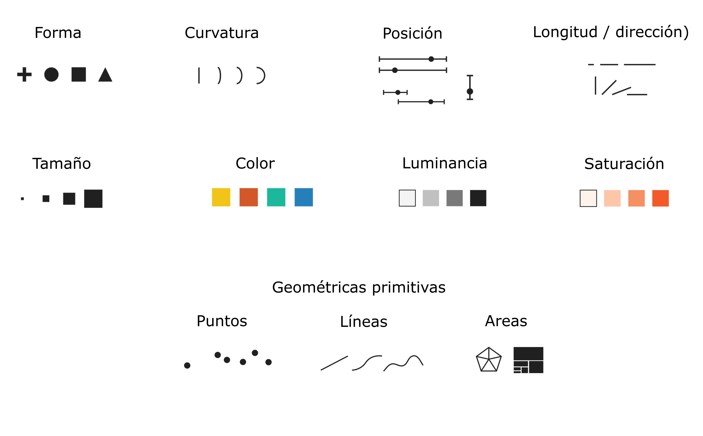
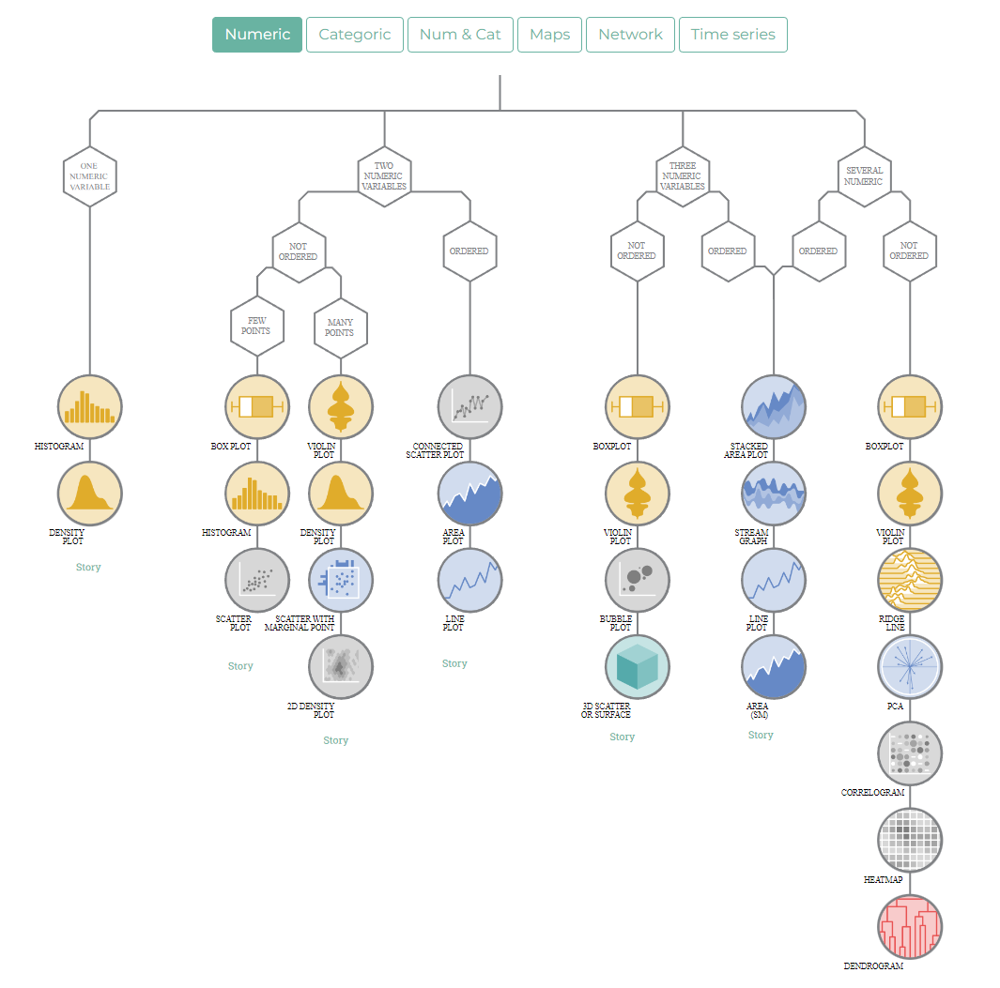

[dataframe] |>
ggplot(mapping = aes(<MAPEO>)) +
geom_xxx()Visualización de datos
La visualización de datos puede ser un medio muy eficaz para identificar patrones en los datos y transmitir un mensaje.
El objetivo científico de cualquier visualización es permitir al lector comprender datos y extraer información intuitivamente, de la forma más precisa y eficiente.
Generalmente construimos visualizaciones para dos fines:
Como parte del Análisis exploratorio (EDA) para descubrir y describir patrones en los datos o para presentar y comunicar, logrando transmitir el mensaje de forma clara y atractiva.
Es importante, al crear una visualización, considerar las características del público objetivo. La interpretación está en el ojo del espectador, y una visualización sólo logrará transmitir su mensaje si se diseña teniendo en cuenta a su audiencia.
Una visualización de datos exitosa logra:
Captar la atención: En un mar de texto, se destacará una visualización. Si un lector tiene poco tiempo o no está seguro de si un documento es de interés, una visualización que llame la atención puede incitarlo a comenzar a leer.
Mejorar el acceso a la información: Las descripciones textuales pueden ser largas y difíciles de leer, mientras que las visualizaciones creadas hábilmente permiten extraer información clave de manera más eficiente, lo que hace que la extracción de información sea una tarea divertida.
Aumentar la precisión: Las narrativas suelen ser menos precisas que una representación visual que muestra puntos de datos y sus ejes correspondientes, mientras que un texto con demasiados datos puede dificultar el seguimiento de la línea argumental.
Resumir contenido: Los gráficos y tablas permiten resumir contenido textual complejo, ayudando al lector a memorizar puntos clave.
Por estas razones, las visualizaciones de datos son elementos clave en casi cualquier tipo de publicación: artículos científicos, presentaciones, posters, etc
Las tablas también son una forma de visualizar datos o resúmenes estadísticos y pueden ser componentes igualmente importantes en una publicación. En algunos casos, una tabla puede visualizar los datos mejor que un gráfico.
Principios y elementos de las visualizaciones
Las visualizaciones de datos deben tener un propósito que no debemos de perder de vista en el proceso de construcción.
Podría decirse que un propósito general de una visualización es comparar grupos de datos, como datos sobre pacientes que reciben diferentes tratamientos. Una buena elección de ejes, límites de ejes, etiquetas y símbolos puede facilitar sustancialmente la identificación de patrones en los datos, mientras que una mala elección de cualquiera de estos elementos puede dificultar sustancialmente la extracción de información.
Elementos gráficos
Varios elementos de una visualización pueden contribuir a la eficacia con la que se puede mostrar a la información, pero básicamente todos están compuestos por signos visuales y geométricas primitivas.
 Cuando seleccionamos un tipo de gráfico estadístico como un gráfico de barras, un boxplot o una dispersión de puntos estamos usando varios de estos signos visuales como líneas, puntos, areas, con colores, tamaños y posiciones diferentes.
Elegir un tipo de visualización
Christian Hennig, profesor de estadística de la Universidad de Bolonia, sugiere resolver las siguientes preguntas:
- ¿El objetivo del gráfico es descubrir algo (“gráfico de análisis EDA”) o dejar claro algo a los demás?
- ¿Qué quieres saber?
- ¿Quién es la audiencia del gráfico?
Tipos de gráfico
Los posibles tipos de gráfico están relacionados a las características de los datos, cuantas variables necesito mostrar, de que tipo son y que cualidad de esas variables me interesa.
El sitio From Data to Viz muestra una serie de árboles de decisión, cada uno de los cuales conduce a diferentes formatos de gráficos recomendados según el tipo de datos seleccionados (numéricos, categóricos, etc.).

Gramática de gráficos
La llamada “La gramática de gráficos” define un conjunto de reglas para construir gráficos estadísticos combinando diferentes tipos de capas, de manera similar a la gramática lingüística.
Esta idea fue propuesta por Leland Wilkinson en su publicación de 2005 (The Grammar of Graphics - Statistics and Computing - USA).
La publicación inspiró a los desarrolladores del paquete ggplot2, el primer paquete del universo tidyverse lanzado en 2007, que se basa en un sistema de capas.

Según la idea de Wilkinson, que aplica ggplot2, todo gráfico parte de los datos que queremos visualizar y vamos enlazando diferentes capas estéticas con elementos geométricos, escalas, ejes, facetas y temas.
ggplot2 necesita de tres componentes básicos y obligatorios para generar una visualización:
- Datos con estructura “ordenada”
- Mapeo estético (aesthetic) de los datos
- Objeto geométrico que da nombre al tipo de gráfico
Subyace siempre:
- Coordenadas que organizan los objetos geométricos
Y se le puede agregar:
Escalas (scale) definen el rango de valores de las estéticas
Facetas que agrupan en subgráficos
Temas estéticos preconfigurados (themes)
La sintaxis básica de los tres elementos necesarios es:
Observamos que las capas del ggplot se añaden con un signo +, a diferencia de las tuberías que conectan otras funciones de tidyverse.
Algunas de las capas posteriores que son opcionales:
[dataframe] |>
ggplot(mapping = aes(x = [x-varible],
y = [y-variable])) +
geom_xxx() +
scale_x_...() +
scale_y_...() +
scale_fill_...() +
otras capas másEl mapeo estético permite definir el rol que cada variables representa en el gráfico. Los roles comunes son: eje x, eje y, color de contorno y color de relleno. Existen otros especiales como de agrupamiento u opacidad.
La simultáneaidad de variables provoca que se puedan realizar gráficos con 2, 3, n variables.
Por supuesto que esta definición conecta con el elemento geométrico seleccionado. Por ejemplo, si el elemento geométrico es un geom_point() generamos un diagrama de dispersión de puntos y para esto necesitamos definir como mínimo una variable en el eje x y otra en el eje y que deberán ser numéricas. También podríamos definir alguna variable que mapee el color de los puntos, es decir una tercera variable participante.